Registers is a collection of flipflops and latches. In the opposite to the Examples.Utilities models the Register models are a series of assignments in the algorithm part of the model. The model text is taken nearly identical from the standard logic text.
| Name | Description |
|---|---|
| 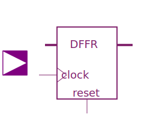 DFFR | Edge triggered register bank with reset |
| 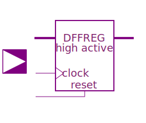 DFFREG | Edge triggered register bank with high active reset |
| 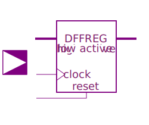 DFFREGL | Edge triggered register bank with low active reset |
| 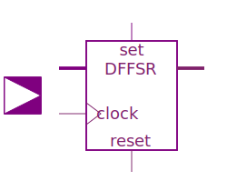 DFFSR | Edge triggered register bank with set and reset |
| 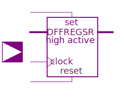 DFFREGSRH | Edge triggered register bank with high active set and reset |
| 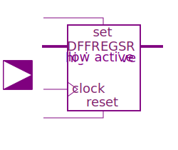 DFFREGSRL | Edge triggered register bank with low active set and reset |
| 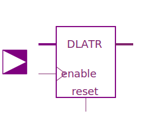 DLATR | Level sensitive register bank with reset |
| 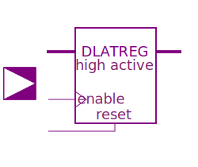 DLATREG | Level sensitive register bank with reset active high |
| 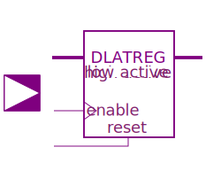 DLATREGL | Level sensitive register bank with reset active low |
| 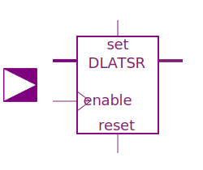 DLATSR | Level sensitive register bank with set and reset |
| 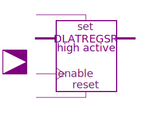 DLATREGSRH | Level sensitive register bank with set and reset, active high |
| DLATREGSRL | Level sensitive register bank with set and reset, active low |